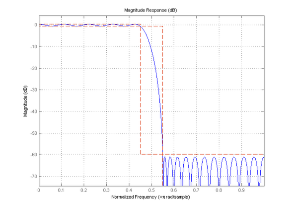
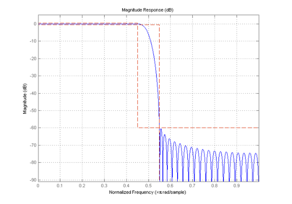
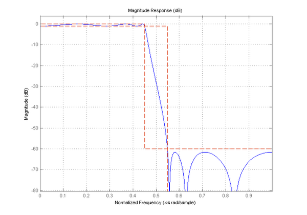
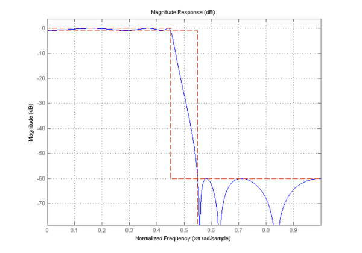
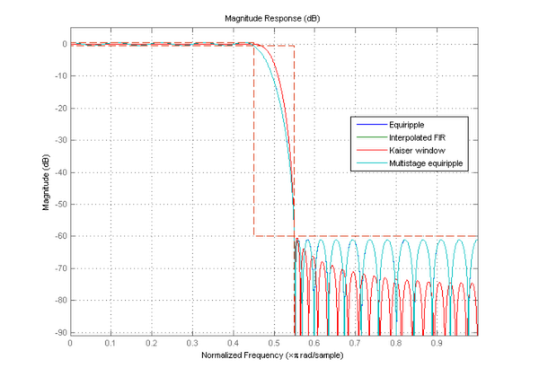
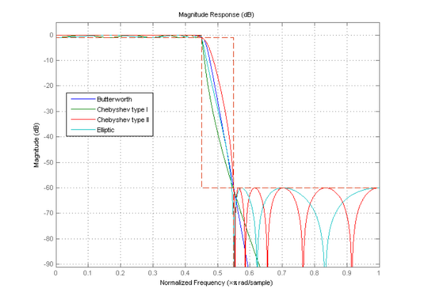

Getting Started with Filter Design (FDESIGN) Objects
The filter design (FDESIGN) objects are a collection of objects that allow you to design lowpass, highpass, and many other types of filters with a variety of constraints. The design process computes the filter coefficients using the various algorithms available in the Signal Processing Toolbox™ and Filter Design Toolbox™ and associates a particular filter structure to those coefficients.
Contents
Getting Help
Typing "help fdesign" in the command window will bring up the help for the filter design objects. Various hyperlinks in the help allow you to navigate to all of the help for the filter design objects. You can also type "help fdesign/responses" for information about the response types that can be specified with filter design objects.
Creating a Filter Design Object
To create a filter design object, you need to select the response to be used. For example, to create a lowpass filter you would type:
h = fdesign.lowpass
h =
Response: 'Lowpass'
Specification: 'Fp,Fst,Ap,Ast'
Description: {4x1 cell}
NormalizedFrequency: true
Fpass: 0.45
Fstop: 0.55
Apass: 1
Astop: 60
Notice that each specification is listed as an abbreviation, for example Fp is the abbreviation for Fpass (the passband frequency edge) and Fst is the abbreviation for Fstop (the stopband frequency edge). The 'Description' property gives a full description of the properties that are added by the 'Specification'.
get(h, 'Description')
ans =
'Passband Frequency'
'Stopband Frequency'
'Passband Ripple (dB)'
'Stopband Attenuation (dB)'
Changing Specification Types
The 'Specification' property allows you to select different design parameters. This is a string which lists the specifications that will be used for the design. To see all valid specifications type:
set(h, 'Specification')
ans =
'Fp,Fst,Ap,Ast'
'N,F3dB'
'Nb,Na,F3dB'
'N,F3dB,Ap'
'N,F3dB,Ap,Ast'
'N,F3dB,Ast'
'N,F3dB,Fst'
'N,Fc'
'N,Fc,Ap,Ast'
'N,Fp,Ap'
'N,Fp,Ap,Ast'
'N,Fp,F3dB'
'N,Fp,Fst'
'N,Fp,Fst,Ap'
'N,Fp,Fst,Ast'
'N,Fst,Ap,Ast'
'N,Fst,Ast'
'Nb,Na,Fp,Fst'
Changing the 'Specification' will change which properties the object has:
set(h, 'Specification', 'N,Fc'); h
h =
Response: 'Lowpass'
Specification: 'N,Fc'
Description: {'Filter Order';'Cutoff Frequency'}
NormalizedFrequency: true
FilterOrder: 10
Fcutoff: 0.5
Setting Design Parameters
You can set design parameters after creating your specification object, or you can pass the specifications when you construct your object. For example:
specs = 'N,Fp,Fst';
h = fdesign.lowpass(specs)
h =
Response: 'Lowpass'
Specification: 'N,Fp,Fst'
Description: {3x1 cell}
NormalizedFrequency: true
FilterOrder: 10
Fpass: 0.45
Fstop: 0.55
After specifying the specification that you want to use, you then specify the values for those specifications.
N = 40; % Filter Order Fpass = .33; % Passband Frequency Edge Fstop = .4; % Stopband Frequency Edge h = fdesign.lowpass(specs, N, Fpass, Fstop)
h =
Response: 'Lowpass'
Specification: 'N,Fp,Fst'
Description: {3x1 cell}
NormalizedFrequency: true
FilterOrder: 40
Fpass: 0.33
Fstop: 0.4
You can also specify a sampling frequency after all of the specifications have been entered.
Fpass = 1.3;
Fstop = 1.6;
Fs = 4.5; % Sampling Frequency
h = fdesign.lowpass(specs, N, Fpass, Fstop, Fs)
h =
Response: 'Lowpass'
Specification: 'N,Fp,Fst'
Description: {3x1 cell}
NormalizedFrequency: false
Fs: 4.5
FilterOrder: 40
Fpass: 1.3
Fstop: 1.6
Amplitude specifications can be given in linear or squared units by providing a flag to the constructor. However, they will always be stored in dB.
Apass = .0575; specs = 'N,Fp,Ap'; h = fdesign.lowpass(specs, N, Fpass, Apass, Fs, 'linear')
h =
Response: 'Lowpass'
Specification: 'N,Fp,Ap'
Description: {3x1 cell}
NormalizedFrequency: false
Fs: 4.5
FilterOrder: 40
Fpass: 1.3
Apass: 0.999980343384991
Apass = .95;
h = fdesign.lowpass(specs, N, Fpass, Apass, Fs, 'squared')
h =
Response: 'Lowpass'
Specification: 'N,Fp,Ap'
Description: {3x1 cell}
NormalizedFrequency: false
Fs: 4.5
FilterOrder: 40
Fpass: 1.3
Apass: 0.222763947111522
An alternative way of changing specifications is by using the SETSPECS method. The SETSPECS method works in the same way as the constructor.
specs = 'N,F3dB';
F3dB = .9;
Fs = 2.5;
setspecs(h, specs, N, F3dB, Fs);
h
h =
Response: 'Lowpass'
Specification: 'N,F3dB'
Description: {'Filter Order';'3dB Frequency'}
NormalizedFrequency: false
Fs: 2.5
FilterOrder: 40
F3dB: 0.9
If your object is already set to the correct 'Specification' you can omit that input from your call to SETSPECS.
F3dB = 1.1; Fs = 3; setspecs(h, N, F3dB, Fs); h
h =
Response: 'Lowpass'
Specification: 'N,F3dB'
Description: {'Filter Order';'3dB Frequency'}
NormalizedFrequency: false
Fs: 3
FilterOrder: 40
F3dB: 1.1
Normalizing Frequency Specifications
To normalize your frequency specifications you can use the NORMALIZEFREQ method.
normalizefreq(h); h
h =
Response: 'Lowpass'
Specification: 'N,F3dB'
Description: {'Filter Order';'3dB Frequency'}
NormalizedFrequency: true
FilterOrder: 40
F3dB: 0.733333333333333
The NORMALIZEFREQ method can also be used to unnormalize the frequency specifications.
newFs = 3.1; normalizefreq(h, false, newFs); h
h =
Response: 'Lowpass'
Specification: 'N,F3dB'
Description: {'Filter Order';'3dB Frequency'}
NormalizedFrequency: false
Fs: 3.1
FilterOrder: 40
F3dB: 1.13666666666667
Designing Filters
To design filters you use the DESIGN method.
h = fdesign.lowpass; Hd = design(h)
Hd =
FilterStructure: 'Direct-Form FIR'
Arithmetic: 'double'
Numerator: [1x43 double]
PersistentMemory: false
With no extra inputs this will design the default filter. To determine which method was used, use the DESIGNMETHODS method with the 'default' flag.
designmethods(h, 'default')
Default Design Methods for class fdesign.lowpass (Fp,Fst,Ap,Ast): equiripple
Specifying no outputs will launch FVTool.
design(h) set(gcf,'Color','white')
close(gcf)
For a complete list of design methods, use DESIGNMETHODS with no extra inputs.
designmethods(h)
Design Methods for class fdesign.lowpass (Fp,Fst,Ap,Ast): butter cheby1 cheby2 ellip equiripple ifir kaiserwin multistage
To get a better description of each design method use the 'full' flag.
designmethods(h, 'full')
Design Methods for class fdesign.lowpass (Fp,Fst,Ap,Ast): Butterworth Chebyshev type I Chebyshev type II Elliptic Equiripple Interpolated FIR Kaiser window Multistage equiripple
DESIGNMETHODS can also take the 'fir' or 'iir' flags to return only FIR algorithms or IIR algorithms.
To design a filter with a specific algorithm, specify it at design time.
design(h, 'kaiserwin') set(gcf,'Color','white')
close(gcf);
Using Design Time Options
Some methods have options that are specific to that method. For help on these design options use the HELP method and pass the desired algorithm name.
help(h, 'ellip')
DESIGN Design a Elliptic iir filter.
HD = DESIGN(D, 'ellip') designs a Elliptic filter specified by the
FDESIGN object D.
HD = DESIGN(..., 'FilterStructure', STRUCTURE) returns a filter with the
structure STRUCTURE. STRUCTURE is 'df2sos' by default and can be any of
the following:
'df1sos'
'df2sos'
'df1tsos'
'df2tsos'
'cascadeallpass'
'cascadewdfallpass'
HD = DESIGN(..., 'MatchExactly', MATCH) designs an Elliptic filter
and matches the frequency and magnitude specification for the band
MATCH exactly. The other band will exceed the specification. MATCH
can be 'stopband', 'passband' or 'both', and is 'both' by default.
HD = DESIGN(..., 'SOSScaleNorm', NORM) designs an SOS filter and scales
the coefficients using the P-Norm NORM. NORM can be either a
discrete-time-domain norm or a frequency-domain norm. Valid time-domain
norms are 'l1','l2', and 'linf'. Valid frequency-domain norms are
'L1','L2', and 'Linf'. Note that L2-norm is equal to l2-norm
(Parseval's theorem) but the same is not true for other norms.
The different norms can be ordered in terms of how stringent they are
as follows: 'l1' >= 'Linf' >= 'L2' = 'l2' >= 'L1' >= 'linf'.
Using the most stringent scaling, 'l1', the filter is the least prone
to overflow, but also has the worst signal-to-noise ratio. Linf-scaling is
the most commonly used scaling in practice.
Scaling is turned off by default, which is equivalent to setting
SOSScaleNorm = ''.
HD = DESIGN(..., 'SOSScaleOpts', OPTS) designs an SOS filter and scales
the coefficients using an FDOPTS.SOSSCALING object OPTS. Scaling options
are:
Property Default Description/Valid values
--------- ------- ------------------------
'sosReorder' 'auto' Reorder section prior to scaling.
{'auto','none','up','down','lowpass',
'highpass','bandpass','bandstop'}
'MaxNumerator' 2 Maximum value for numerator coefficients
'NumeratorConstraint' 'none' {'none', 'unit', 'normalize','po2'}
'OverflowMode' 'wrap' {'wrap','saturate'}
'ScaleValueConstraint' 'unit' {'unit','none','po2'}
'MaxScaleValue' 'Not used' Maximum value for scale values
When sosReorder is set to 'auto', the sections will be automatically
reordered depending on the response type of the design (lowpass,
highpass, etc.).
Note that 'MaxScaleValue' will only be used when 'ScaleValueConstraint'
is set to something other than 'unit'. If 'MaxScaleValue' is set to a
number, the 'ScaleValueConstraint' will be changed to 'none'. Further,
if SOSScaleNorm is off (as it is by default), then all the SOSScaleOpts
will be ignored.
For more information about P-Norm and scaling options see help for DFILT\SCALE.
% Example #1 - Design a lowpass Elliptic filter in the DF2TSOS structure.
h = fdesign.lowpass('N,Fp,Ap,Ast');
Hd = design(h, 'ellip', 'FilterStructure', 'df2tsos');
These are specified at design time as a parameter/value pair. For example:
design(h, 'ellip', 'MatchExactly', 'passband') set(gcf,'Color','white')
close(gcf);
These parameters can also be specified in a structure. The DESIGNOPTS method will return a valid structure for your object and specificed algorithm with the default values.
% Get the default design time options do = designopts(h, 'ellip'); % Match the stopband exactly. do.MatchExactly = 'stopband';
design(h, 'ellip', do); set(gcf,'Color','white')
close(gcf)
Comparing Designs
Design can also be used to investigate various designs simultaneously.
% Show all FIR designs design(h, 'allfir'); set(gcf,'Color','white')
close(gcf) % Show all IIR designs design(h, 'alliir'); set(gcf,'Color','white') axis([0 1 -91 5])
close(gcf)